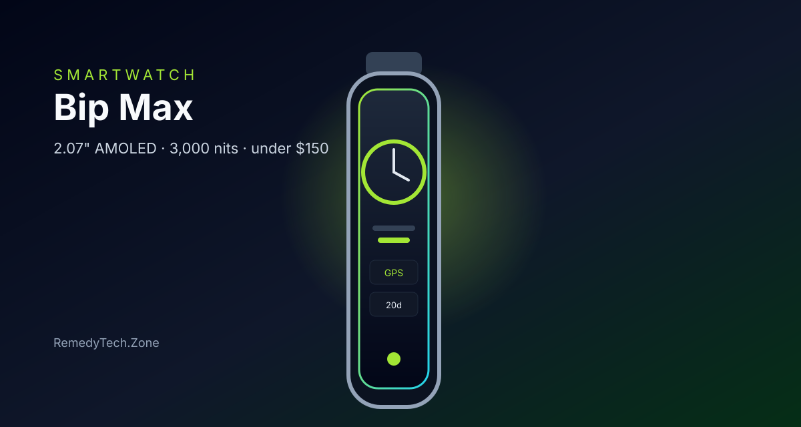

Amazfit Bip Max Review: Huge Screen and Long GPS Battery Under $150
At about $100, the Bip Max adds a brighter 2.07-inch AMOLED, offline maps, and multi-week battery to the budget watch formula.
The Amazfit Bip Max is the practical step up from the smaller Bip watches without leaving the under-$150 lane. Launched in May 2026 at $99.99 on Amazfit and Amazon, it keeps the light fitness-watch brief and stretches the screen, storage, and battery so outdoor days stop feeling like a compromise.
The 2.07-inch AMOLED is the first reason to pick it. Peak brightness is rated up to 3,000 nits, which is genuinely useful in direct sun on a run or a bike path. The larger panel still sits in a light case, so it reads more like a sports watch than a chunky Wear OS slab. 5 ATM water resistance covers rain, showers, and pool sessions, which is the right bar for this price.
Battery is the other clear win. A 550mAh cell is rated for about 20 days of typical use, and continuous GPS is listed around 40 to 50 hours depending on the mode. That is the difference between charging once or twice a month and hunting for a cable after every long outing. Mixed daily use with notifications and a few workouts will land shorter than the lab number, but it should still outlast most watches in this price band by a wide margin.
Tracking and navigation are more complete than the Bip 6. Built-in GPS, offline maps, about 4GB of storage, and roughly 150 sport modes cover runs, rides, and strength sessions without dragging a phone for every route. Zepp OS 5.0 adds the Flow assistant and training integrations such as TrainingPeaks and Runna. Heart rate, SpO2, and recovery metrics are there for everyday health checks. The honest limits: no NFC payments, and the app store is not Wear OS. Notifications and replies work through the Zepp app on Android and iPhone, but this is a fitness watch first.
If you already liked the Bip idea and wanted a brighter screen, real maps, and a battery that can handle long GPS sessions, the Bip Max is the one to buy under $150. It will not replace a Galaxy Watch or Apple Watch for apps and tap-to-pay. For steps, routes, and a wrist you forget to charge, it is one of the strongest current picks.
Key Takeaways
- Price Range: ~$100 (Amazon and Amazfit, list $99.99)
- Display: 2.07-inch AMOLED, up to 3,000 nits
- Battery: about 20 days typical use, ~40–50 hours GPS
- Tracking: built-in GPS, offline maps, 4GB storage, 150 sport modes